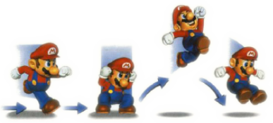
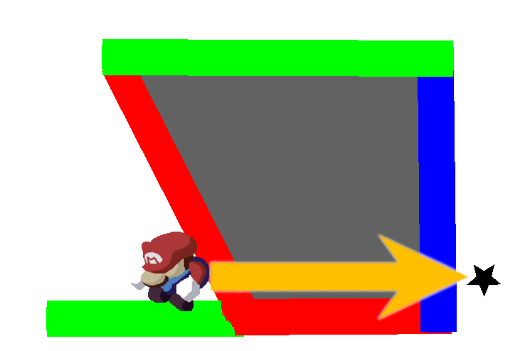

Super Mario 64, released in 1996 for the Nintendo 64,
was Mario's first 3D adventure, and one of the first 3D platforming games ever created,
allowing the game to set the stage for an entire new genre of video games.
While the game is regarded by many as a timeless classic, the game isn't without its flaws.
The game was quite ambitious for its time, and there were many features initially planned that had to be cut (sorry Luigi),
either due to time constraints or the technical limitations of the Nintendo 64 console.
Despite these major development setbacks, the game was met with rave reviews and still stands up today as a solid platformer, and if you haven't played it before, now is a good time to consider it.
Mario has a wide moveset at his disposal, including backflips, sideflips, triple jumps, and other crazy acrobatic stunts that no normal middle-aged plumber should be able to pull off. One of the more important moves Mario can do is the Long Jump. While this jump doesn't give Mario much height, it allows him to cover a large amount of horizontal distance, and is one of the quicker ways to get around in SM64.

Anybody who knows Super Mario 64 knows about the Backwards Long Jump (BLJ) glitch, which allows Mario to achieve insane speeds, letting him clip through walls and obstacles, and even transcend reality and warp to a parallel universe.
We'll get to that last part later. First, let's talk about how the game controls Mario's speed. This will allow us to understand why the BLJ exists in the first place.
There are two speed measurements for Mario: his vertical speed (how fast he's moving up or down), and his horizontal speed (how fast he's moving across the ground).
To explain the BLJ, we can ignore Mario's vertical speed and instead focus on his horizontal speed.
Mario's H-speed is a measurement of how many units Mario will move on each frame. Mario's top running speed is 32, meaning he will cover 32 units each frame.
Similar to how we measure the speed of our car in kilometers per hour, Mario's speed is measured in units per frame.
But how big is a unit, and how long is a frame?
In order to get a better sense of scale for these measurements, let's go a bit deeper into what they mean.
A frame is the term used for one update of the game. Every time the image on the screen updates, that is one frame. Super Mario 64 runs at 30 frames per second, meaning the game updates 30 times every second.
If Mario's top speed is 32 units per frame, and the game runs at 30fps, then we can do a bit of math, and see that when running at his top speed, Mario covers 960 units in one second.
We still need a better understanding of a unit though. Exactly how big is a unit? Well, Mario is 161 units tall, and 100 units wide, and every level within the game exists in a 16384 unit cube.
As established earlier, Mario's top running speed is 32. When performing long jumps, Mario's top speed is 52. From this alone we can see why long jumps are one of the better ways to get around.

The value of 52, however, is the fastest Mario can travel when in the long jump state. When doing a long jump, the player can use the joystick to angle Mario to the left or right, as well as tilt it forward or backward to control Mario's speed mid-air.
Holding the stick forward (the direction Mario is travelling) will give us the top speed of 52, while tilting back will slow Mario down, and if the stick is held back the entire time, Mario will land right back where he started.
Yes, that's not how physics works, but Mario doesn't care. When Mario does a long jump, the game boosts his forward speed to get him up to 52. This boost only happens on the first jump. If the player does consecutive long jumps (jumping again right after landing from the first), Mario gets a boost in the direction he's traveling, even if he's going backwards. This works in our favour when doing a BLJ.
When the stick is held backwards long enough during a long jump, Mario's speed will decrease so much that it will go below 0, which represents Mario traveling backwards. In the above clip, you may have noticed Mario's speed value had an 'M' before it when he slid down the hill at the end.
The letter M is used by the game in place of the minus symbol, since the in-game font doesn't have that symbol. When Mario slides backwards, his speed is negative.
Here's a clip showing how Mario moves when performing consecutive long jumps while holding the stick back. Notice the burst of forward speed on the first jump, and how the boosts on the following jumps are in the same direction he's traveling.

Now, that backwards long jump was great and all, but why isn't Mario being launched halfway across the universe like I promised?
The answer: We need to go faster!
Before we go faster, we have to look at how Mario interacts with the 3 types of surfaces found in the game: walls, floors, and ceilings.
| Surface Types | ||||
| Walls | Floors | Ceilings | ||
| Properties | Hitbox Size | 5 units away from wall | 25 units below floor |
Infinitely upwards
(stops if it meets a floor) |
| What happens when Mario enters? | H speed set to 0, Mario is moved back to edge of wall hitbox. If Mario meets the wall at an angle, he will continue to move along the wall. |
V speed set to 0, Mario takes appropriate fall damage if he's falling, Mario snapped up to surface of floor.
All H speed is conserved, Mario will move across the floor (unless he's fallen from a high place and gone splat). |
V speed set to 0, all movement canceled.
If Mario meets a slanted ceiling while on the floor, he won't be able to walk along it like he would a wall, because his H speed is canceled too. |
|
What's interesting to us is how Mario interacts with a ceiling.
When Mario walks into a wall at an angle, the game takes his movement vector, breaks it into components, and discards the component that goes into the wall. This allows Mario to walk along a wall, even if the player points him into it.
Let's replace that wall with a ceiling that meets the floor at an angle (think of a tent shape). When Mario walks into it at the same angle as he did with the wall, the game doesn't act the same way it did with the wall. The game, when it sees Mario is entering a ceiling hitbox, stops all movement for that frame.
To summarize:
If Mario moves into a wall at an angle, the game adjusts his course to move along the wall.
If Mario moves into a ceiling at an angle, the game doesn't let him move at all.
We understand speed, and we understand how Mario interacts with different surfaces. With our new knowledge, let's send Mario flying!
When Mario enters a ceiling, the game cancels Mario's movement. Let's take our BLJ method from before and line one up so we enter a slanted ceiling.

You'll see that Mario remains stuck. If the player mashes the A button to jump fast enough, Mario will start a consecutive long jump like before, but the ceiling will keep him in place, effectively causing Mario to land the moment after he jumps.
Remember that for consecutive long jumps, the speed boost is in the same direction Mario is traveling. Since the ceiling is keeping Mario in place, we can accumulate these speed boosts. If you watch the speed counter, you'll see Mario's speed getting incredibly higher, until he eventually blasts off at around 3220 units/frame.
Blast off occurs when Mario's next intended position is no longer inside the ceiling's hitbox. Blast off will occur at different points depending on where Mario does a BLJ, but in this case, the ceiling is large enough to send Mario across the entire level.
You might recall that during a long jump, Mario's speed is capped at 52. If Mario's speed is capped, why does going backwards turn him into a rocket ship?
The reason is a simple mistake the developers made. They capped Mario's speed at 52, but forgot that Mario was able to travel backwards during a long jump.
Remember, when Mario goes backwards, his speed is negative. The BLJ increases our speed in the negative direction,
and since any negative speed value is below 52, the game does nothing to stop Mario from achieving liftoff when he's in reverse.
The process of a BLJ is as follows:
Given Mario's current speed, is his next calculated position somewhere he shouldn't be? No: Mario stays put and jumps again, causing his speed to rise. Repeat. Yes: Blast off!
This diagram shows how Mario builds up speed until his next calculated position is beyond the out-of-bounds area (in grey). The arrow shows Mario's trajectory, and the star is his next intended position.
Note that the star begins near Mario, but as his speed goes up the game tries to move him even farther. He blasts off once the star reaches a location that is not out-of-bounds.
We've successfully turned our plumber into a fighter jet, but some things remain to be discussed.
For one, Mario seems to be getting way more speed than he actually needs to clip through the ceiling and blast off. That's because the game doesn't just check his final destination on each frame, but 4 quarter steps along his trajectory.
If any of the quarter steps are out of bounds, the movement is aborted. This is best shown using the same diagram as above.
So, even though Mario's final position is ok, the three quarter steps in between are out-of-bounds, and Mario will not move.
In order to blast off, Mario will actually need to build up 4 times the speed, so that the first quarter step is not out-of-bounds.
Now that we've figured out how this form of the BLJ works, we can look at the two other methods, which are a lot simpler.